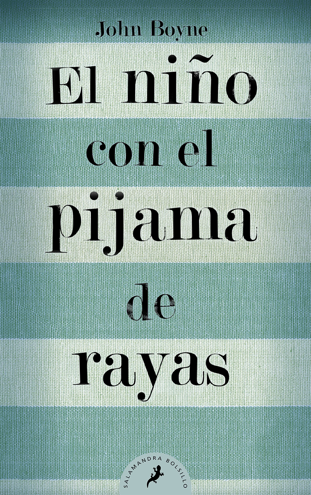
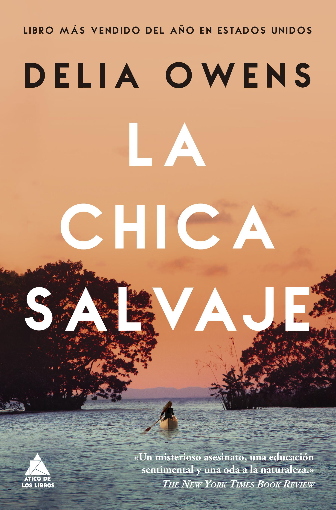
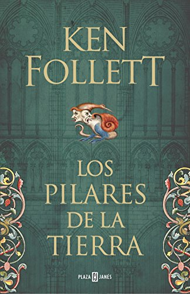
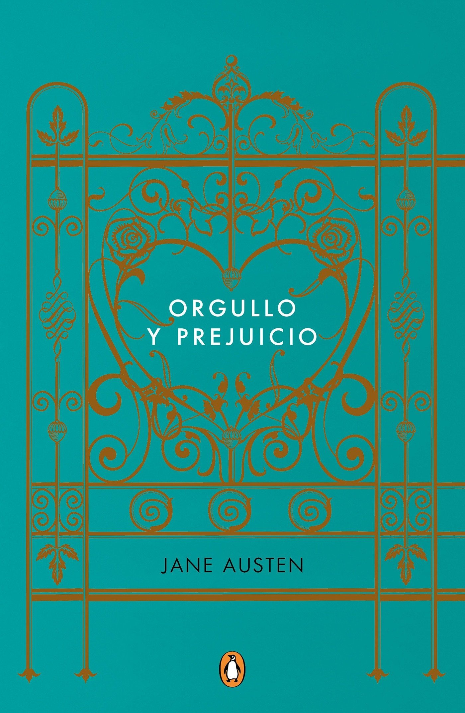
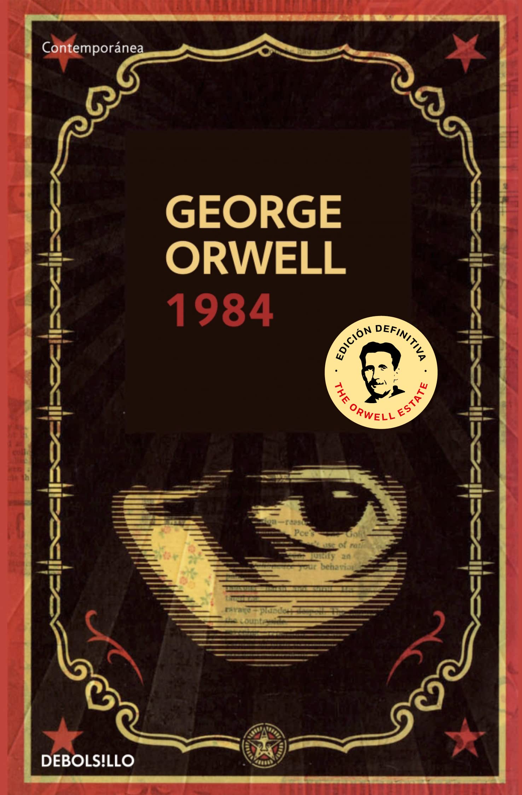

Lecturas recomendadas
| Título | Autor | Fecha publicación | Portada |
|---|---|---|---|
| Ángeles y demonios | Dan Brown | 2000 |  |
| El niño con el pijama de rayas | John Boyne | 2006 |  |
| El peregrino de Compostela | Paulo Coelho | 1987 | |
| La chica salvaje | Delia Owens | 2018 |  |
| Los pilares de la Tierra | Ken Follet | 1989 |  |
| Orgullo y prejuicio | Jane Austen | 1813 |  |
| Pacto de lealtad | Gonzalo Giner | 2014 | |
| 1984 | George Orwell | 1949 |  |